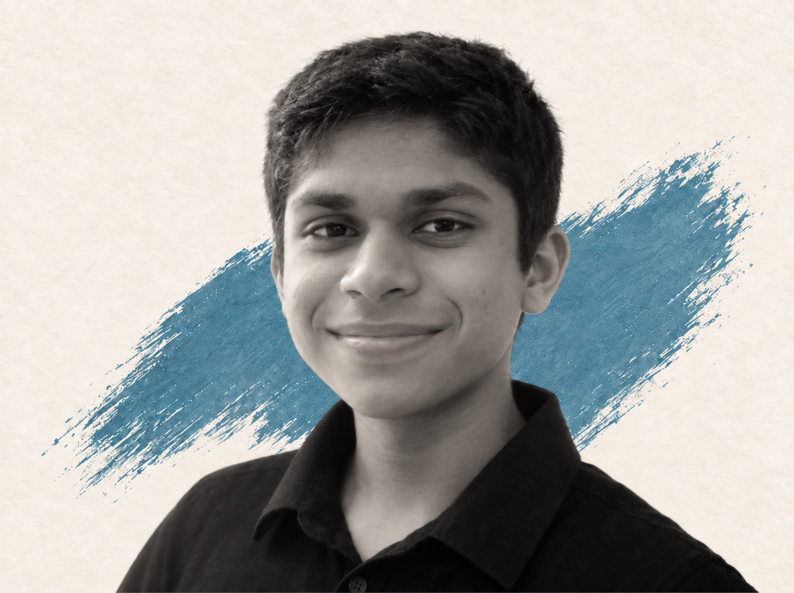
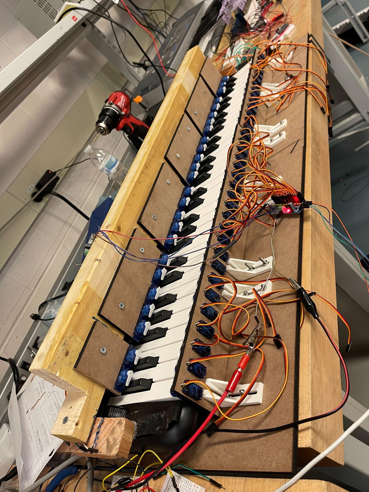
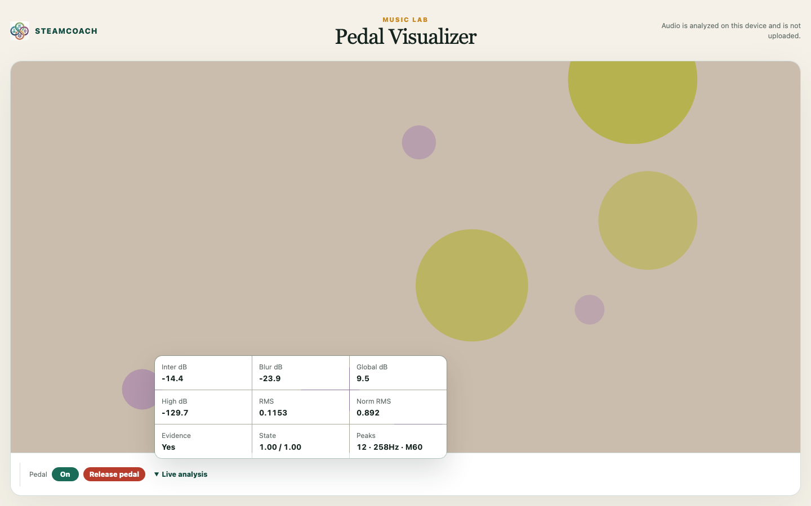
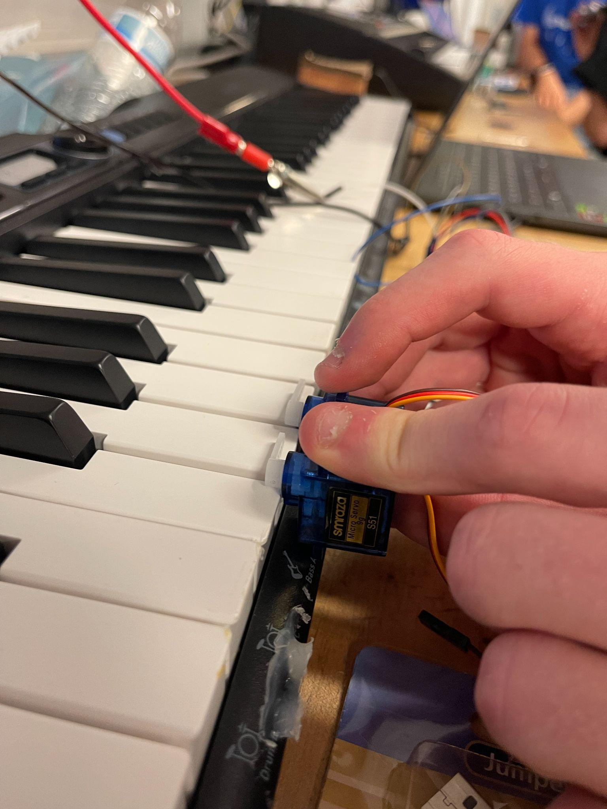

Naman Siddheshwar
I’m a high school student in Silicon Valley using computation to understand complex systems—whether in a chemistry lab, in orbit, on a robotics bench, or through music.
I build learning tools, research music recommendation systems, and document engineering projects as I work.

Featured Work
View all projectsCompetition Prep · Learning Tools
STEAMCOACH
Adaptive practice for Science Bowl, Science Olympiad, F=ma, USNCO, math, and music—built around timed simulations and purpose-built question generation.
Explore STEAMCOACH- Math Forge
- SBReader
- SciOly Help
Machine Learning · Music Tech
Music Recommendation Systems
Learning from listening behavior and musical structure to recommend songs for real empathy concerts.
Read the research
Robotics · Embedded Systems
Robotic Piano Player
From voltage dividers and PWM to a fast, reliable servo-driven instrument.
See the build
Audio Analysis · Music Education
Sustain Pedal Visualizer
Real-time visual feedback designed to help piano students make better sustain-pedal decisions.
See the projectWriting
View all writingA New Side of Recommendation: Classical DSP
Building an explainable similarity system around melody, harmony, rhythm, and emotion.
6 min readOn Noteflight and Notation Software
A comparison of notation tools through the lenses of UX, performance, and openness.
5 min read